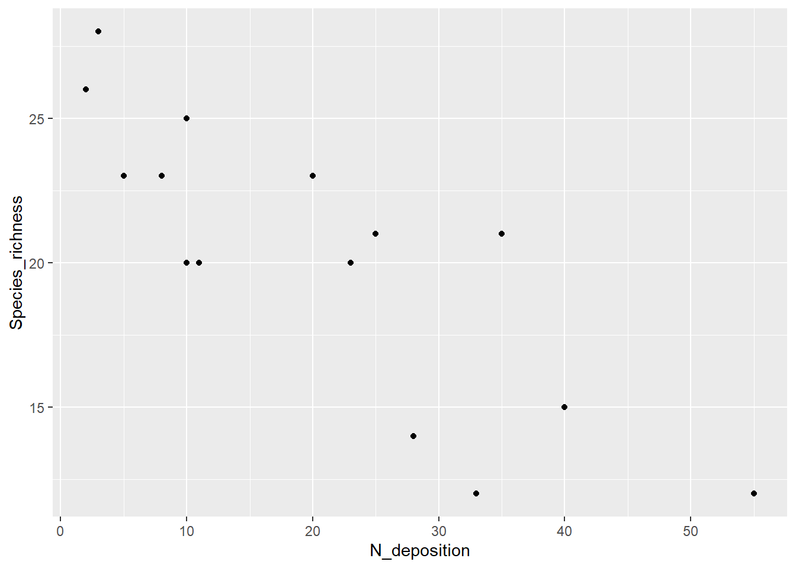
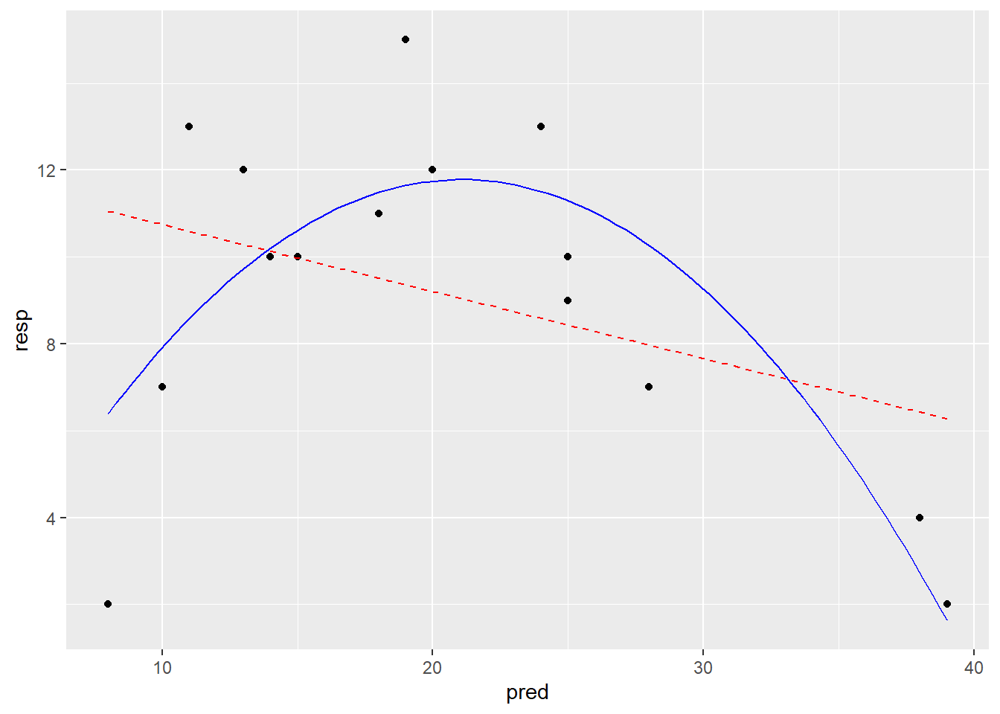
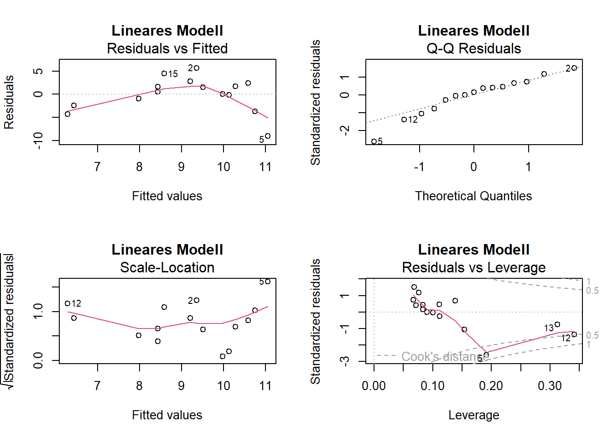
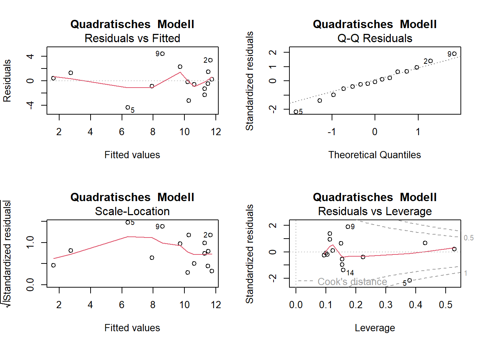
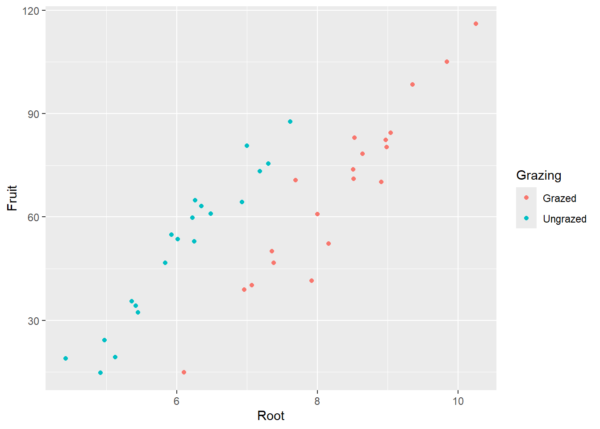
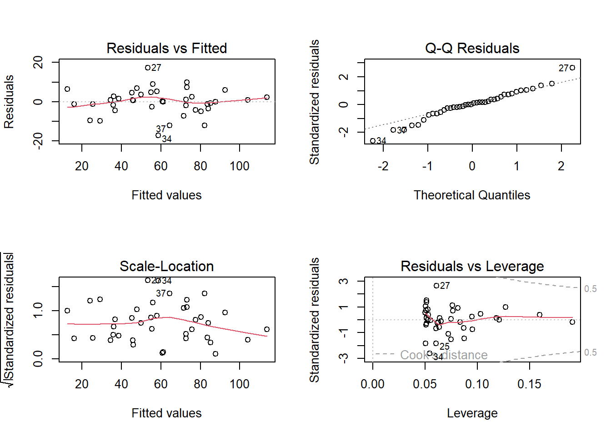

## Korrelationen und Regressionen# Datensatz zum Einfluss von Stickstoffdepositionen auf den Pflanzenartenreichtumlibrary(readr)library(ggplot2)df <-read_delim("datasets/stat/Nitrogen.csv", ";")summary(df)
N_deposition Species_richness
Min. : 2.00 Min. :12.0
1st Qu.: 9.00 1st Qu.:17.5
Median :20.00 Median :21.0
Mean :20.53 Mean :20.2
3rd Qu.:30.50 3rd Qu.:23.0
Max. :55.00 Max. :28.0
# Plotten der Beziehungggplot(df, aes(x = N_deposition, y = Species_richness)) +geom_point()

# Pearson Korrelation# zuerst Species_richness dann N_depositioncor.test(df$Species_richness, df$N_deposition, method ="pearson")
Pearson's product-moment correlation
data: df$Species_richness and df$N_deposition
t = -5.2941, df = 13, p-value = 0.0001453
alternative hypothesis: true correlation is not equal to 0
95 percent confidence interval:
-0.9405572 -0.5450218
sample estimates:
cor
-0.8265238
# Pearson Korrelation# zuerst Species_richness dann N_depositioncor.test(df$N_deposition, df$Species_richness, method ="pearson") # zuerst N_deposition dann Species_richness
Pearson's product-moment correlation
data: df$N_deposition and df$Species_richness
t = -5.2941, df = 13, p-value = 0.0001453
alternative hypothesis: true correlation is not equal to 0
95 percent confidence interval:
-0.9405572 -0.5450218
sample estimates:
cor
-0.8265238
Spearman's rank correlation rho
data: df$Species_richness and df$N_deposition
S = 1015.5, p-value = 0.0002259
alternative hypothesis: true rho is not equal to 0
sample estimates:
rho
-0.8133721
Kendall's rank correlation tau
data: df$Species_richness and df$N_deposition
z = -3.308, p-value = 0.0009398
alternative hypothesis: true tau is not equal to 0
sample estimates:
tau
-0.657115
# Jetzt als Regressionlm1 <-lm(Species_richness ~ N_deposition, data = df) # zuerst Species_richness dann N_depositionlm1
# Modell definieren ud anschauenlm_1 <-lm(resp ~ pred) # Einfaches lineares Modellsummary(lm_1) # Modell anschauen
Call:
lm(formula = resp ~ pred)
Residuals:
Min 1Q Median 3Q Max
-9.0549 -1.7015 0.5654 2.0617 5.6406
Coefficients:
Estimate Std. Error t value Pr(>|t|)
(Intercept) 12.2879 2.4472 5.021 0.000234 ***
pred -0.1541 0.1092 -1.412 0.181538
---
Signif. codes: 0 '***' 0.001 '**' 0.01 '*' 0.05 '.' 0.1 ' ' 1
Residual standard error: 3.863 on 13 degrees of freedom
Multiple R-squared: 0.1329, Adjusted R-squared: 0.06622
F-statistic: 1.993 on 1 and 13 DF, p-value: 0.1815
-> kein signifikanter Zusammenhang im einfachen linearen Modell und entsprechend kleines Bestimmtheitsmass (adj. R2 = 0.07)
# Polynomische Regression Modell definieren und anschauen lm_quad <-lm(resp ~ pred +I(pred^2)) # lineares Modell mit quadratischem Termsummarysummary(lm_quad) # lineares Modell mit quadratischem Term anschauen
Call:
lm(formula = resp ~ pred + I(pred^2))
Residuals:
Min 1Q Median 3Q Max
-4.3866 -1.1018 -0.2027 1.3831 4.4211
Coefficients:
Estimate Std. Error t value Pr(>|t|)
(Intercept) -2.239308 3.811746 -0.587 0.56777
pred 1.330933 0.360105 3.696 0.00306 **
I(pred^2) -0.031587 0.007504 -4.209 0.00121 **
---
Signif. codes: 0 '***' 0.001 '**' 0.01 '*' 0.05 '.' 0.1 ' ' 1
Residual standard error: 2.555 on 12 degrees of freedom
Multiple R-squared: 0.6499, Adjusted R-squared: 0.5915
F-statistic: 11.14 on 2 and 12 DF, p-value: 0.001842
-> Signifikanter Zusammenhang und viel besseres Bestimmtheitsmass (adj. R2 = 0.60)
# Modelle darstellen# Vorhersagen der Modelle generieren xv <-seq(min(pred), max(pred), length =100) # 100 x-Werte, mit denen man die Modelle "füttern" kann y_lm1 <-predict(lm_1, data.frame(pred = xv)) # Vorhersagen des quadratischen Modells für die y-Wertey_lm_quad <-predict(lm_quad, data.frame(pred = xv)) # Vorhersagen des quadratischen Modells für die y-WerteModPred <-data.frame(xv, y_lm1, y_lm_quad)# Modellvorhersagen plottenggplot(data, aes(x = pred, y = resp)) +geom_point() +geom_line(data = ModPred, aes(x = xv, y = y_lm1), color ="red", linetype ="dashed") +geom_line(data = ModPred, aes(x = xv, y = y_lm_quad), color ="blue")

# Alternativ kann man die Modelle Modellvorhersagen auch direkt in ggplot rechnen# + geom_smooth(method = "lm", formula = y ~ x, se = FALSE) # Einfache Lineare Regression# + geom_smooth(method = "lm", formula = y ~ x + I(x^2), se = FALSE) # Mit quadratischem Term
# Residualplotspar(mfrow =c(2, 2))plot(lm_1, main ="Lineares Modell")

plot(lm_quad, main ="Quadratisches Modell")

-> Die Plots sehen beim Modell mit quadratischem Term besser aus
ANCOVA
Experiment zur Fruchtproduktion (“Fruit”) von Ipomopsis sp. in Abhängigkeit von der Beweidung (“Grazing” mit 2 Levels: “Grazed”, “Ungrazed”) und korrigiert für die Pflanzengrösse vor der Beweidung (hier ausgedrückt als Durchmesser an der Spitze des Wurzelstock: “Root”)
# Daten einlesen und anschauenlibrary("readr")compensation <-read_delim("datasets/stat/ipomopsis.csv")compensation$Grazing <-as.factor(compensation$Grazing)head(compensation)
Root Fruit Grazing
Min. : 4.426 Min. : 14.73 Grazed :20
1st Qu.: 6.083 1st Qu.: 41.15 Ungrazed:20
Median : 7.123 Median : 60.88
Mean : 7.181 Mean : 59.41
3rd Qu.: 8.510 3rd Qu.: 76.19
Max. :10.253 Max. :116.05
# Plotten der vollständigen Daten/Informationlibrary("ggplot2")ggplot(compensation, aes(x = Root, y = Fruit, color = Grazing)) +geom_point()

-> Je grösser die Pflanze, desto grösser ihre Fruchtproduktion. -> Die grössere Fruchtproduktion innerhalb der beweideten Gruppe scheint ein Resultat von unterschiedlichen Pflanzengrössen zwischen den Gruppen zu sein.
# Lineare Modelle definieren und anschauenaoc_1 <-lm(Fruit ~ Root * Grazing, data = compensation) # Volles Modell mit Interaktionsummary.aov(aoc_1)
Call:
lm(formula = Fruit ~ Grazing + Root, data = compensation)
Residuals:
Min 1Q Median 3Q Max
-17.1920 -2.8224 0.3223 3.9144 17.3290
Coefficients:
Estimate Std. Error t value Pr(>|t|)
(Intercept) -127.829 9.664 -13.23 1.35e-15 ***
GrazingUngrazed 36.103 3.357 10.75 6.11e-13 ***
Root 23.560 1.149 20.51 < 2e-16 ***
---
Signif. codes: 0 '***' 0.001 '**' 0.01 '*' 0.05 '.' 0.1 ' ' 1
Residual standard error: 6.747 on 37 degrees of freedom
Multiple R-squared: 0.9291, Adjusted R-squared: 0.9252
F-statistic: 242.3 on 2 and 37 DF, p-value: < 2.2e-16
# Residualplots anschauenpar(mfrow =c(2, 2)) # 2x2 Plots pro Grafikplot(aoc_2)

par(mfrow =c(1, 1)) # Grafik zurücksetzen
-> Das ANCOVA-Modell widerspiegelt die Zusammenhänge wie sie aufgrund der grafisch dargestellten Daten zu vermuten sind gut. Die Residual-Plots zeigen 3 Ausreisser (Beobachtungen 27, 34 und 37), welche “aus der Reihe tanzen”.